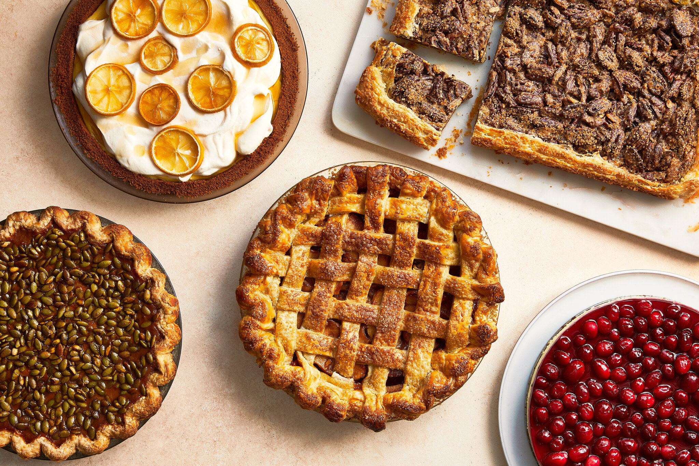

About Pies
Pies are a cherished dish worldwide, consisting of a pastry crust filled with various ingredients, which can be sweet or savory. They come in numerous types, including fruit pies, cream pies, savory pies like pot pie, and custard pies such as pumpkin pie. Crusts can be single, double, or crumb-based, and popular variations include American favorites like apple and pecan pie, British meat pies, and French tarts like tarte Tatin. Making a pie involves preparing the crust, making the filling, assembling, and baking, with options to use either homemade or store-bought ingredients. Versatile and customizable, pies are enjoyed across cultures for both desserts and main courses, making them a delightful addition to any meal.
The History of Pie
The history of pie dates back to ancient Egypt around 2000 BC, where simple oat, wheat, or barley crusts were filled with honey and fruits. The concept spread through the Roman Empire, leading to savory meat and seafood pies. In medieval Europe, intricate crusts known as "coffyns" were used primarily for preserving meat, not meant to be eaten. By the 16th century, sweet pies became popular in England, especially among the nobility, thanks to the introduction of sugar, leading to the creation of fruit pies. As European settlers brought pie-making traditions to America, iconic varieties like apple and pumpkin pie emerged. Today, pies are a beloved staple in many cuisines, celebrated for their versatility and ability to adapt to local ingredients and tastes, particularly during holidays like Thanksgiving.
